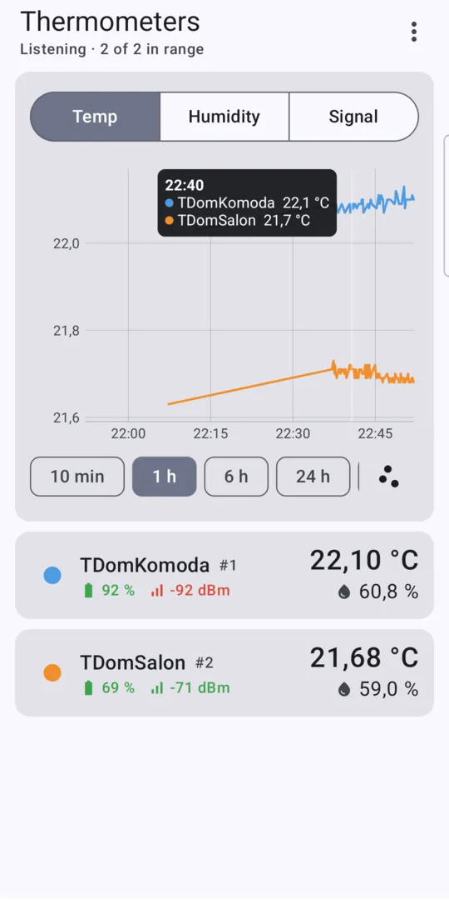
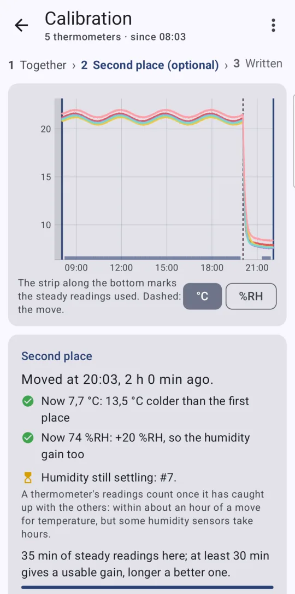
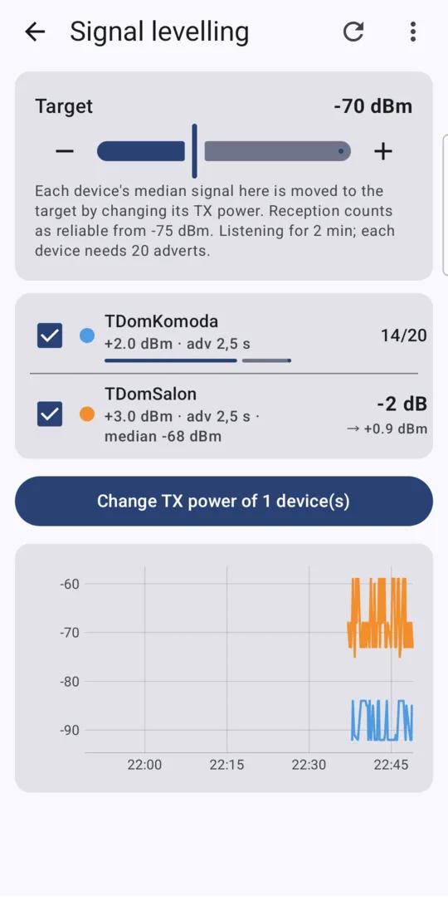

Open source · Android
Make every Xiaomi thermometer in the house agree.
thermo is an Android app for LYWSD03MMC and other thermometers running the pvvx ATC_MiThermometer firmware. It charts their live BTHome v2 readings and fills gaps from each device's own log. Put them side by side and start a calibration: the app tells you how precise the corrections already are, then writes them into the thermometers. Home Assistant sees the fixed values too.
What it looks like
A card per thermometer, a chart you can scrub with a finger, long-press to select several devices for clock sync, log download or settings. Every write to a thermometer asks first.



Disagreement in temperature (rms against the group) over the fitted window, before and after calibrating 8 devices.
The same for humidity. Out of the box, readings spread over 4–5 %RH.
Clock drift measured on the thermometers. Syncing their clocks also trims each one's rate.
Everything for a houseful of cheap BLE thermometers
Every action works on one device or on all selected devices at once, so eight thermometers are as easy as one.
Live dashboard
A chart above a card per thermometer: temperature, humidity, battery and signal strength, updated as BTHome v2 adverts arrive. History is saved as plain CSV, one file per day, and a home-screen widget shows the latest readings.
Guided calibration
No reference instrument needed. A robust fit pulls every device onto the group average and rejects outliers. The app says how precise the corrections already are and how long a better level takes, then writes a gain and offset to each thermometer's flash.
Log download, honest timestamps
Phone out of range for a while? The app downloads each device's own log and corrects for its wrong clock. Device clocks are usually off, and nothing assumes they aren't.
Clock sync and drift trim
Sets every clock to the phone's time. A day later it measures how fast each one runs and trims the oscillator, which here ran about 20 s per day fast.
Rename and settings, in bulk
Rename devices (stored in flash, broadcast to Home Assistant), and change advertising interval, measurement interval, TX power and log interval on all of them in one go.
Which one is which?
Identify shows the device's number from the app on its own LCD for thirty minutes, 333 with a smiley for #3, so you can label them.
Signal levelling
Listens for a few minutes, then sets each thermometer's TX power so its signal arrives at about −70 dBm: reliable, without a louder radio than it needs. Near ones get quieter, far ones louder, after you confirm.
Keeps recording
With the app closed it records in the background behind a notification, also after a reboot or an app update. During a calibration it tells you when the precision you picked is reached, and says its progress aloud about four times an hour.
Humidity from salt
A sealed box over damp kitchen salt holds 75 %RH. Calibrate in one and, once the box has settled, the app corrects the humidity to the salt instead of to the group's average.
Calibrating takes an afternoon and a few taps
- Side by side.
Put all thermometers a few centimetres apart, the same way up, away from sun and radiators, and pick them in the app. After about 40 minutes it shows how precise corrections written now would be, and how long a better level takes. That is enough for offsets.
- Somewhere 5 °C different, optionally.
Move them all at once: outside in the shade, a cold room, a garage. The second temperature makes the gain measurable. The app waits for each thermometer to catch up before its readings count.
- Write.
One tap writes each device's own correction to its flash. Keep them together a while to see what is left. The factory values can always be restored.
Read the full calibration guide → It covers what range to calibrate in, humidity, calibrating in a salt box, and how the fit works.
Install
Android 8 or newer. Download the APK from GitHub and open it on the phone, allowing your browser or file manager to install apps when asked. There's no store listing yet. Tested on a Galaxy S21 and a Pixel 10 Pro. To build it yourself, see android/.
Readings are kept on the phone as CSV, one file per day; Data and recording in the menu shares them or imports more.
First, flash the thermometers
thermo talks to the open pvvx ATC_MiThermometer firmware. Stock Xiaomi firmware encrypts its adverts and has no calibration interface. Flashing is wireless, from a browser, with the TelinkMiFlasher page:
- Open it in Chrome on the phone (Web Bluetooth works there out of the box).
- Connect, activate, and flash the pvvx firmware for your model (version 5.9 or newer was used here).
- Set the advertising type to BTHome v2. Each thermometer then shows up in thermo, Home Assistant and ESPHome.
Not quite what you need? Have an agent rewrite it.
thermo is written to be changed by AI coding agents such as Claude Code, Codex or Cursor. The repository has an AGENTS.md that explains the architecture and the rules for working near real devices. The BTHome decoder, the calibration maths and the app's state are free of Android and covered by unit tests, so an agent can check its own work without hardware.
The app itself started this way: thermo began as a terminal app for Linux and macOS, and Claude Code ported it to Android overnight, testing on a real phone over adb. That terminal version is no longer developed, but it's still in the repository: if you want thermo on a computer, an agent can bring it up to the app's features.
Questions
Can I calibrate LYWSD03MMC thermometers without a reference thermometer?
Yes, relative to each other: the app makes all devices agree with their group average, which is usually closer to the truth than any single sensor. Agreement isn't absolute accuracy, though. For humidity there is a cheap reference: a sealed box over damp table salt holds 75 %RH, and calibrated in one, the app corrects the humidity to the salt. The guide explains how.
Will Home Assistant see the calibrated values?
Yes. The gain and offset are written into each thermometer, so every receiver of its BTHome adverts gets corrected values: Home Assistant's BTHome integration, ESPHome Bluetooth proxies and anything else that decodes BTHome. The app only listens, so it runs fine next to them. Names set in the app appear in Home Assistant when it scans actively.
Which thermometers work?
Tested with eight Xiaomi LYWSD03MMC (Mi Temperature and Humidity Monitor 2) on pvvx firmware 5.9, including both sensor variants (SHT4x-type and SHT3x-type coefficients). Other models running the pvvx firmware with BTHome v2, such as MHO-C401 or CGG1, should show up and be calibratable but are untested. So should THB1, THB2, BTH01, TH05 and other devices on pvvx's THB2 firmware: the app supports it, but it hasn't been tested with one yet. Reports are welcome.
Is there a version for a computer?
thermo started as a terminal app for Linux and macOS. It is no longer developed and is kept, unchanged, in the repository's archive/tui; the history files are the same as the app's. If you need it, an AI coding agent can bring it up to the app's features: see the agents guide.
Can I undo a calibration?
Yes. Restore factory calibration in the calibration screen's menu brings back the factory coefficients, and every change is logged with old and new values in calibrations.csv. Corrections compose, so you can calibrate again later on top of the last one.
Does it drain the batteries?
Listening is passive and costs the thermometers nothing. The app connects to a device when you ask for something (clock sync, settings, rename, identify, calibration, signal levelling, whose screen reads each device's settings when it opens) and to download its log when a device's history has a gap. Levelling can save battery: it turns down the radio of thermometers close to the phone.